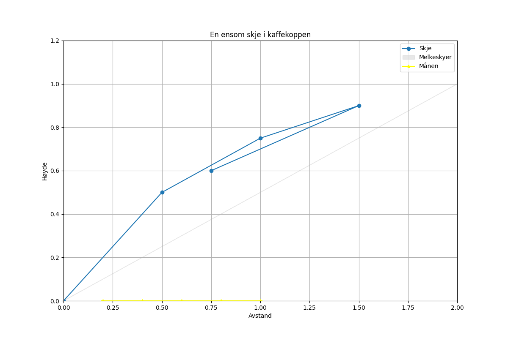

En ensom skje i kaffekoppen, som drømmer om verdens hav. Den svømmer i melkeskyer, og vinker til månen i morgen.

import matplotlib.pyplot as plt
import numpy as np
# Data fra diktet (forenklet)
skje_posisjon = [0, 0.5, 1.0, 1.5, 0.75]
melkesky_høyde = [0, 0.5, 0.75, 0.9, 0.6]
måne_avstand = [1.0, 0.8, 0.6, 0.4, 0.2]
# Lag en figur og akser
fig = plt.figure(figsize=(12, 8))
ax = fig.add_subplot(111)
# Plot skje
ax.plot(skje_posisjon, melkesky_høyde, marker='o', label='Skje')
# Plot melkeskyer
ax.fill(np.linspace(0, 2, 100), np.linspace(0, 1, 100), alpha=0.5, color='lightgray', label='Melkeskyer')
# Plot månen
ax.plot(måne_avstand, [0] * len(måne_avstand), marker='*', color='yellow', label='Månen')
# Tilpass plot
ax.set_xlabel('Avstand')
ax.set_ylabel('Høyde')
ax.set_title('En ensom skje i kaffekoppen')
ax.set_xlim(0, 2)
ax.set_ylim(0, 1.2)
ax.grid(True)
ax.legend()
# Lagre figuren
plt.savefig(output_path)execution_ok=True fallback_used=False image_ok=True